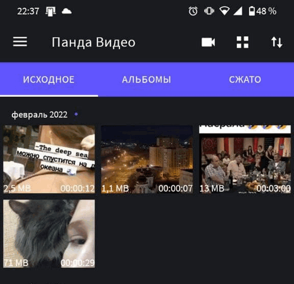
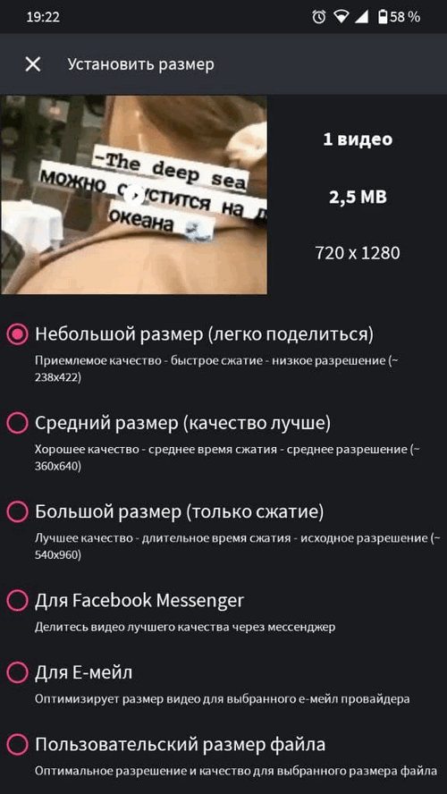
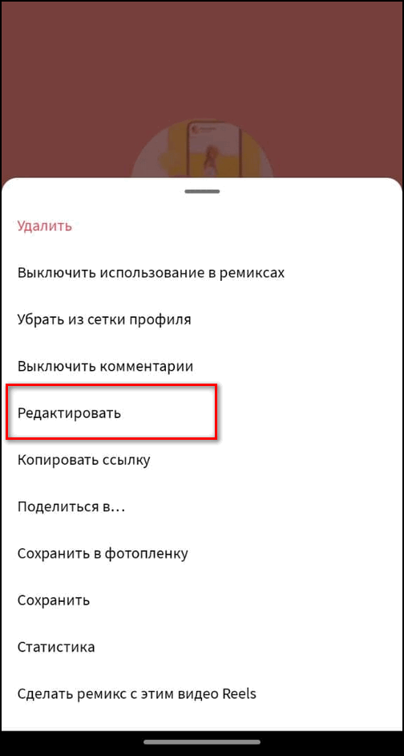
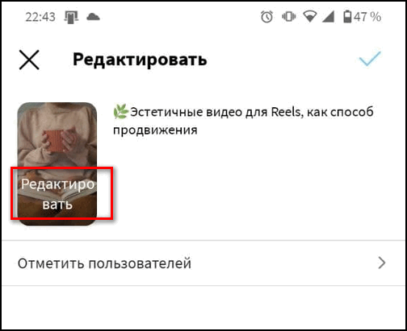
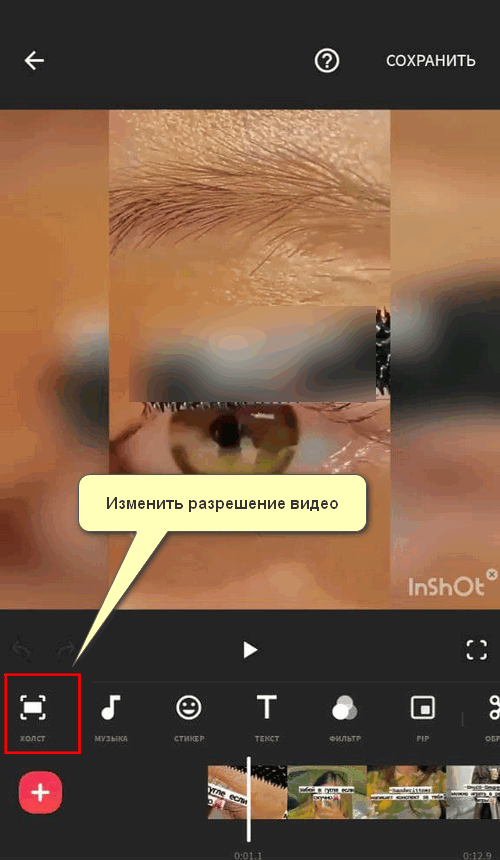
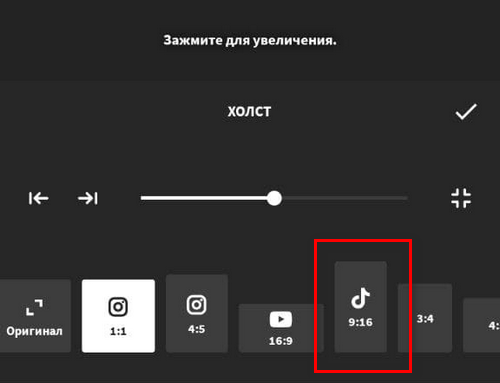
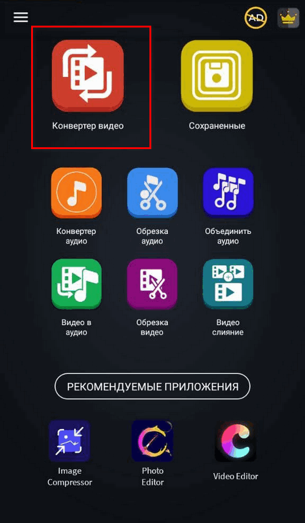
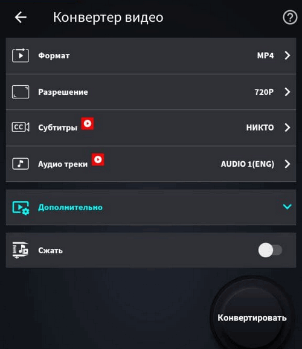

Формат и разрешение видео для Reels в Инстаграме

Формат Рилс в Инстаграме* и размер видео – важные параметры, которые необходимо соблюдать при размещении. Если автор не учитывает требования социальной сети, то его клип может быть не опубликован.
Стандартный формат для загрузки клипа в Reels
Формат Reels предполагает размещение клипов в вертикальном формате. Некоторые смартфоны не поддерживают полноразмерные клипы, так как разрешение им не подходит. Поэтому, в Рилс есть особенности размещения текста на экране, добавления визуальных эффектов.
Стандартные требования:
- 1080 на 1920 пикселей;
- формат видео: MP4/MOV/AVI;
- кодек: 264;
- музыкальное сопровождение: либо из каталога, либо с подтвержденным авторским правом;
- длительность: до одной минуты.
Если пользователь пытается поделиться клипом более 60 секунд – система предложит обрезать такую запись. Кроме указанных технических параметров, есть требования к контенту: видео не должно содержать сцены насилия, распространять клевету или вражду, запрещены к показу табачные изделия и алкоголь.
Требования к размеру файла
Важен не только формат Рилс в Инстаграме*, но и объем файла, которым пытаются поделиться. Как и в с другими видео в социальной сети, есть требования к размеру файла:
| Формат: | Размер: |
| IGTV | не более 3, 5 Гб |
| Лента | до 2 Гб |
| Reels | До 1,5 Гб |
Видео в Рилс направлены на быстрый просмотр, который не требует длительной прогрузки. Зритель должен пролистывать ролики, отмечая те, которые ему понравились больше остальных. И если размер файла превышает допустимый, то такой клип будет прогружаться дольше. Что делать, если видео превышает допустимое значение:
- приложение ПандаВидео. Добавить клип и выбрать максимальное сжатие, но в этом случае может пострадать качество;
- сервис Clideo. Выбрать функцию: «Сжать» и указать нужное значение.
Как уменьшить размер файла с помощью приложения:
- Зайти в Play Market – скачать и установить утилиту.
- Открыть – выбрать видеоклип, который нужно уменьшить.

- Указать требуемое сжатие (для Facebook* Messenger или «Небольшой файл») – подождать, пока приложение завершит процесс.

- Сохранить ролик на смартфоне.
Далее, нужно перейти в Инстаграм* и поделиться видео в своем профиле. Перед размещением нужно проверить качество клипа, потому что после сжатия оно может ухудшиться.
Как изменить обложку в Рилс при загрузке
Разобравшись с размером Reels в Instagram*, нужно приступить к обработке клипа и добавлении обложки. Поменять главную картинку, которая будет показана зрителям, возможно и после размещения записи. Обложка – это то, что увидит посетитель страницы, если перейдет во вкладку «Reels» к владельцу учетной записи. Установить свою обложку:
- Перейти к размещению клипа – меню с предварительным просмотром и добавлением описания.
- Нажать по обложке – выбрать на временной шкале фрагмент, который будет отображен в профиле.
- Сохранить и опубликовать.
Еще один способ, как поменять обложку в Рилс:
- Перейти к ранее опубликованной записи.
- Нажать сверху три точки – Редактировать.

- Появится меню ввода нового описания и обложка – нажать по заставке.
- Выбрать фрагмент, который должен быть показан – сохранить внесенные изменения.

Обложку можно вставить в клип, как отдельное изображение: в начале или в конце записи. При прокрутке доступных моментов на временной шкале нужно попасть именно в тот, который автор создал для заставки.
Как добавить в Рилс горизонтальное видео
В социальную сеть преимущественно добавляют вертикальные клипы, которые удобно просматривать в Stories и Ленте. Горизонтальный формат для Reels не распространен, но владелец профиля может добавить в свою видеотеку. Разместить горизонтальное видео можно несколькими способами:
- настроить вертикальный формат с помощью inShot. В видеоредакторе можно добавить рамки, чтобы сделать клип горизонтальным и отцентровать;
- разместить без предварительного редактирования. Тогда в Reels будут автоматически добавлены рамки.
Приложение inShot помогает в решении проблем с форматом видео в Рилс Инстаграма*:
- Скачать и установить утилиту из Play Market.
- Открыть – Новый проект.

- Выбрать клип, который нужно отредактировать – инструмент: «Холст».
- Указать разрешение, как для Тик Тока или 9:16.

- Указать частоту кадров: 60 FPS – сохранить на смартфон.
После, владелец профиля может разместить запись в своем аккаунте. Если размещать без предварительного редактирования, то можно выбирать функцию: «Увеличение», которая приблизит картинку в видео.
Ошибка загрузки клипа в Рилс Инстаграм*
При добавлении видеозаписи в Рилс Инстаграма* могут возникать ошибки, которые связаны с форматом файла, его отображением в социальной сети. Основной перечень проблем, с которыми может столкнуться пользователь:
- видео не отображается в Reels. Появляется черный квадрат, на фоне может идти музыка;
- отсутствует музыка. Либо неправильно был выбран аудиокодек, либо видео в неподходящем формате;
- клип увеличен. Нужно подобрать другое разрешение или воспользоваться добавлением рамок.
Чтобы решить проблему с отображением Reels, нужно конвертировать клип в другой формат.
Это возможно через сервис Clideo или утилиты для конвертирования клипов:
- Зайти в Play Market – установить: «Video Converter».

- Открыть – указать клип из Галереи, который нужно отредактировать.
- Выбрать формат MP4 – сохранить на смартфон.

Если конвертирование не помогло, значит файл нужно проверить на других устройствах. К примеру, перенести на компьютер и посмотреть: нет ли ошибок при запуске.